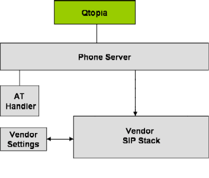

| Home · All Classes · Grouped Classes · Annotated · Functions | |
This document provides an overview of the Qtopia VoIP infrastructure, as implemented by the reference sipagent implementation.
The Qtopia telephony infrastructure is designed to support any number of telephony services, of which sipagent may be just one. The companion VoIP Integration Guide describes how to add additional VoIP implementations to Qtopia.
An overview of the VoIP Architecture is provided in the following diagram:

All telephony operations in Qtopia are accessed using the Qtopia Phone Library. The phone library in turn sends QCop messages to the phone server, which asks the back end telephony services to perform the requested operations. All of the QCop infrastructure is provided for the VoIP systems integrator.
In the diagram above, two telephony services are shown: the AT-based modem handler for GSM cellular networks, and a vendor-specific SIP stack to provide VoIP functionality. Also shown is a vendor-specific settings program that is used to configure the parameters of the SIP stack.
See the VoIP Integration Guide for more information on adding a new VoIP telephony service to Qtopia.
The Qtopia Phone Library provides a rich set of API's for supporting VoIP telephony operations, including call management, network registration, presence, and configuration.
The reference implementation of VoIP that comes with Qtopia is known as sipagent. It provides simple SIP functionality using the open source libdissipate2 library from the KPhone project. The key features are:
Note: Currently due to licensing inconsistencies libdissipate2 cannot be shipped with Qtopia.
The reference implementation is intended to be a guide as to how a SIP stack can be integrated with Qtopia rather than an implementation intended for use in commercial deployments.
The sipsettings program is also distributed with sipagent to demonstrate how to write a settings program for a VoIP stack. Since every VoIP stack has its own unique configuration settings, it isn't possible to provide a general-purpose settings program as with the more standardized GSM networks. VoIP stack vendors can choose to use sipsettings as a base for their own settings program, or write their own from scratch.
Qtopia VoIP is integrated with the following applications:
Call History is a Qtopia module providing the history of all calls received, missed and dialled. VoIP call details are displayed and calls can be initiated from the Call History screen.
Qtopia provides a basic settings application for VoIP. However, integration of a settings application and design of the settings GUI is largely the responsibility of the vendor. The following describes commonly supported functionality:
The screen displays comprising the sipsettings application are described in the following table:
| Display Name | Description |
|---|---|
| Identity | Allows the user to set
|
| Proxy | Allows the user to set
|
| Advanced | Allows the user to set:
|
In addition, the user can register to or unregister from the network, and change their presence availability using menu options.
A third-party VoIP stack would typically provide a similar settings application.
Quick Dial component is a Qtopia module that provides a dialing facility from the Home screen and is integrated with the Qtopia phone edition. VoIP identifiers are taken as input Call History matches are presented and the VoIP call is initiated.
The Contacts application stores, edits, and displays the VoIP identifier and status of a contact. It interacts with the VoIP framework for:
The Contact application receives updates from VoIP server regarding VoIP user status (online/offline) and is responsible for keeping it up-to-date in its database. It uses the QPresence telephony interface for this purpose.
| Copyright © 2008 Trolltech | Trademarks | Qtopia 4.3.4 |